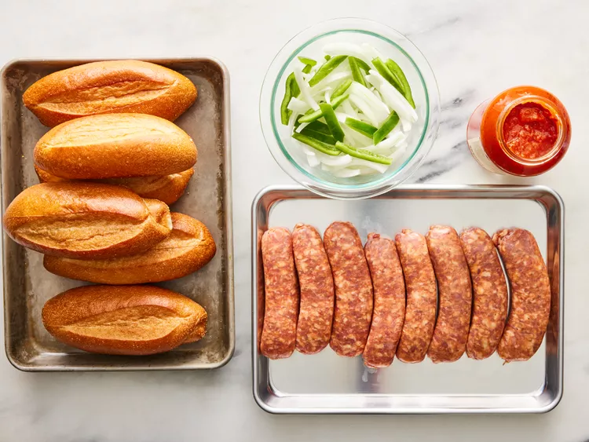
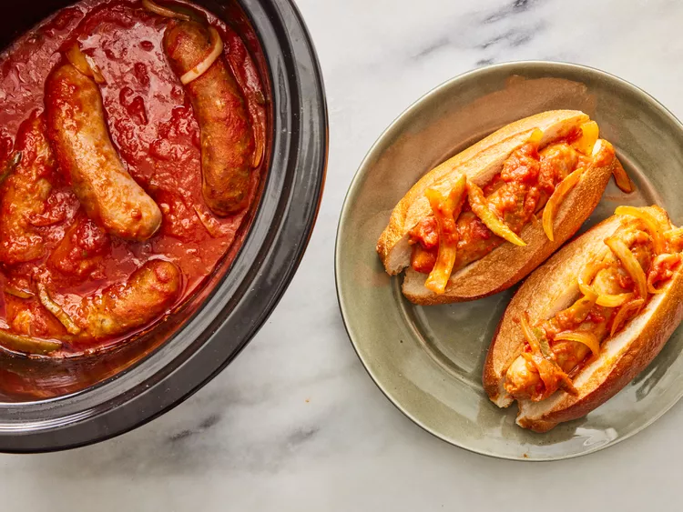

This crockpot sausage recipe is a warm, easy meal made even easier in the slow cooker. These sausages may be served in sandwiches or over rice.
Prep Time: 5 mins
Cook Time: 6 hrs
Total Time: 6hrs 5mins
Servings: 6
Gather all ingredients.
Place Italian sausage links, spaghetti sauce, green pepper, and onion into a slow cooker; mix until well combined.
Cover and cook on Low for 6 hours. Serve on hoagie rolls.
Calories: 1024
Fat: 57g
Carbs: 88g
Protein: 36g